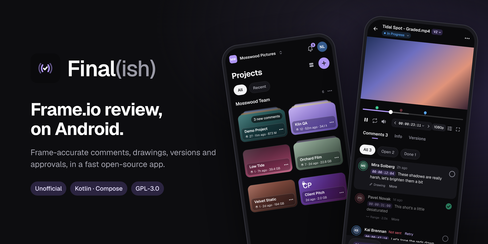

Final(ish): an unofficial Frame.io client for Android
Final(ish) is a free, open-source, unofficial Frame.io client for Android phones and tablets. Review videos, leave time-coded comments and drawings, approve versions and share links from your phone. Frame.io has no official Android app: Final(ish) uses the official Frame.io V4 API and signs in with your Adobe ID.


- Get it on Google Play (Android 8.0 or later)
- Or download the APK from GitHub
- Source code and documentation on GitHub
What it does
- Browse workspaces, projects, folders, version stacks and collections
- Frame-accurate video player with timecode, speed, loop, aspect masks and picture-in-picture
- Time-coded and range comments, on-frame drawings, mark as done
- Images, PDFs, audio and Word, Excel and PowerPoint files
- Status, rating and metadata fields; compare versions side by side or with a wipe
- Share links, background uploads that resume, offline files and comments
- Notifications with no server, six languages, demo mode with no account
Questions
Is there a Frame.io app for Android?
Frame.io has no official Android app. Final(ish) is a free, open-source, unofficial Frame.io app for Android phones and tablets, available on Google Play. It uses the official Frame.io V4 API.
Which Frame.io accounts work with Final(ish)?
Frame.io V4 accounts that sign in with an Adobe ID, on every plan including Free. Legacy (V3) accounts are not supported.
Is Final(ish) made by Adobe or Frame.io?
No. Final(ish) is an independent open-source project and is not affiliated with, endorsed or sponsored by Adobe or Frame.io.
Free, with no ads and no tracking. Licensed under the GNU GPL v3.0.
Final(ish) is not affiliated with, endorsed or sponsored by Adobe or Frame.io. Adobe and Frame.io are either registered trademarks or trademarks of Adobe in the United States and/or other countries.